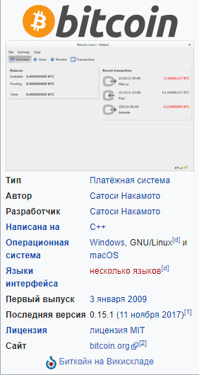

Биткойн

Битко́йн (англ. Bitcoin, от bit — «бит» и coin — «монета») — пиринговая платёжная система, использующая одноимённую единицу для учёта операций и одноимённый протокол передачи данных. Для обеспечения функционирования и защиты системы используются криптографические методы. Вся информация о транзакциях между адресами системы доступна в открытом виде.
Минимальная передаваемая величина (наименьшая величина дробления) — 10−8 биткойна — получила название «сатоши» в честь создателя Сатоси Накамото, хотя сам он использовал в таких случаях слово «цент».
Электронный платёж между двумя сторонами происходит без посредников и необратим — нет механизма отмены подтверждённой операции (включая случаи, когда платёж был отправлен на ошибочный или несуществующий адрес, или когда транзакция была подписана закрытым ключом, который стал известен другим лицам). Средства никто не может заблокировать (арестовать), даже временно, за исключением владельца закрытого ключа (или лица, которому он стал известен). Но предусмотренная технология мультиподписи позволяет привлечь третью сторону (арбитра) и реализовать «обратимые транзакции». При помощи специального языка сценариев есть возможность реализовать и другие варианты умных контрактов, однако он не доступен из графического интерфейса и не полон по Тьюрингу, в отличие от более новых блокчейновых систем.
Разные авторы по-разному классифицируют биткойны. Чаще всего встречаются варианты: криптовалюта, виртуальная валюта, цифровая валют, электронная наличность.
Биткойны могут использоваться для обмена на товары или услуги у продавцов, которые согласны их принимать. Обмен на обычные валюты происходит через онлайн-сервис обмена цифровых валют, другие платёжные системы, обменные пункты или непосредственно между заинтересованными сторонами.
Комиссия за проведение операций назначается отправителем добровольно, размер комиссии влияет на приоритет при обработке транзакции. Обычно программа-клиент подсказывает рекомендуемый размер комиссии. Транзакции без комиссии возможны и также обрабатываются, однако не рекомендуются, поскольку время их обработки неизвестно и может быть довольно велико.
Одна из главных особенностей системы — полная децентрализация: нет центрального администратора или какого-либо его аналога. Необходимым и достаточным элементом этой платёжной системы является базовая программа-клиент (имеет открытый исходный код). Запущенные на множестве компьютеров программы-клиенты соединяются между собой в одноранговую сеть, каждый узел которой равноправен и самодостаточен. Невозможно государственное или частное управление системой, в том числе изменение суммарного количества биткойнов. Заранее известны объём и время выпуска новых биткойнов, но распределяются они относительно случайно среди тех, кто использует своё оборудование для вычислений[15], результаты которых являются механизмом регулирования и подтверждения правомочности операций в системе «Биткойн» (см. метод доказательства выполнения работы).
- 1. Стандартизация
- 1.1 Названия в русскоязычных текстах
- 2 История создания
- 3 Описание
- 4 Принцип работы
- 4.1 Ключи
- 4.2 Адресация
- 4.2.1 Конфиденциальность
- 4.3 Транзакции
- 4.3.1 Комиссионные сборы
- 4.4 Блоки транзакций
- 4.5 Майнинг
- 4.5.1 Пулы
- 4.6 Объём данных
- 4.7 Масштабируемость
- 5 Программное обеспечение
- 6 Безопасность
- 6.1 Холодное хранение
- 7 «Физические» биткойны
- 8 Правовой статус
- 9 Исследования применения в традиционной финансовой среде
- 9.1 Сравнение с золотым стандартом
- 10 Экономика
- 10.1 Классификация
- 10.2 Ценовая волатильность
- 10.3 Площадки обмена
- 10.3.1 Mt.Gox
- 10.3.2 Bitstamp
- 10.3.3 Cryptsy
- 10.3.4 Kraken
- 10.3.5 Bitfinex
- 10.3.6 BTC-E
- 10.3.7 Китайская тройка
- 10.4 Сайты с «бесплатными» биткойнами
- 11 Оценка технологии «Биткойн»
- 11.1 Альтернативное использование технологии
- 12 Критика
- 12.1 Эмиссия денег вне контроля
- 12.2 Оборот нелегальных товаров
- 12.3 Спекулятивный пузырь
- 12.4 Дискуссия о финансовой пирамиде
- 12.5 Непризнание валютой
- 12.6 Риски
Стандартизация
Bitcoin
 В качестве сокращения вместо «биткойн» часто пишут латинские BTC. Такая запись похожа на коды валют, однако подобный код международным стандартом ISO 4217 пока не присвоен. 7 октября 2014 года Bitcoin Foundation опубликовала планы добиться стандартизации кода для биткойна. Запись BTC противоречит принятой в стандарте системе — именовать «глобальные товары» начиная с X (например, золото имеет код XAU). В качестве кандидата рассматривают вариант XBT. При указании BTC или XBT имеется в виду расчётная единица, а не сеть, набор алгоритмов или какая-либо другая сущность, относящаяся к данной тематике.
Знак биткойна «BitcoinSign.svg» включён в стандарт Юникода версии 10.0, ему присвоен номер U+20BF (₿)[18]. Иногда применяют символ ฿ — знак тайского бата, но он поддерживается не всеми кодировками и шрифтами.
URI-схема «bitcoin:», для операций с биткойнами через гиперссылки, официально включена в спецификации WHATWG для HTML5.
Биткойн также планируется добавить в список валют в Microsoft Excel 2016.
В качестве сокращения вместо «биткойн» часто пишут латинские BTC. Такая запись похожа на коды валют, однако подобный код международным стандартом ISO 4217 пока не присвоен. 7 октября 2014 года Bitcoin Foundation опубликовала планы добиться стандартизации кода для биткойна. Запись BTC противоречит принятой в стандарте системе — именовать «глобальные товары» начиная с X (например, золото имеет код XAU). В качестве кандидата рассматривают вариант XBT. При указании BTC или XBT имеется в виду расчётная единица, а не сеть, набор алгоритмов или какая-либо другая сущность, относящаяся к данной тематике.
Знак биткойна «BitcoinSign.svg» включён в стандарт Юникода версии 10.0, ему присвоен номер U+20BF (₿)[18]. Иногда применяют символ ฿ — знак тайского бата, но он поддерживается не всеми кодировками и шрифтами.
URI-схема «bitcoin:», для операций с биткойнами через гиперссылки, официально включена в спецификации WHATWG для HTML5.
Биткойн также планируется добавить в список валют в Microsoft Excel 2016.
Названия в русскоязычных текстах
При употреблении названия в русскоязычных текстах часто используют один из трёх вариантов:
транскрипция «Биткойн», соответствующая правилам англо-русской практической транскрипции, используемой для передачи английских собственных имён, а также других лексических единиц, непосредственно заимствуемых из английского языка (например, терминов), для которых не существует исторически сложившейся (традиционной) передачи на русский язык; применён в заявлении Банка России; с 12 сентября 2014 года используется на сайте Bitcoin Project.
транслитерация «Биткоин»[9] использовалась на сайте Bitcoin Project до 12 сентября 2014 года.
оригинальное написание латиницей[12];
Разное написание встречается даже в публикациях одного издания.
История создания
Марк Андрессен, разработчик первого графического интернет-браузера NCSA Mosaic, считает, что на фундаментальном уровне система «Биткойн» является прорывом в области компьютерных наук, который опирается на 20 лет исследований криптографических валют и 40 лет работы в области криптографии тысяч исследователей по всему миру[27].
В 1983 году Дэвид Чаум (англ. David Chaum) и Стефан Брэндс (англ. Stefan Brands) предложили первые протоколы «электронной наличности»[28].
В мае 1997 года Адам Бак (англ. Adam Back) для противодействия отправке спама и DoS-атакам предложил Hashcash, основанную на системе доказательства выполнения работы. Впоследствии подобная система в другой реализации стала частью процедуры создания новых блоков в биткойн-базе.
Идеи криптовалюты «b-money» описал в 1998 году Вэй Дай (англ. Wei Dai) в рассылке шифропанков[29]. Независимо от него примерно в то же время аналогичные идеи предложил Ник Сабо (англ. Nick Szabo) для «bit-gold»[30]. Ник Сабо также предложил модель рыночного механизма, основанного на управлении инфляцией, и исследовал некоторые аспекты выявления надёжной информации в ненадёжной децентрализованной системе (задача византийских генералов).
Позднее Хэл Финни реализовал связку цепочек хеш-блоков для системы Hashcash на базе чипа для шифрования IBM в рамках спецификации TPM. Хэл Финни стал вторым участником сети Биткойн[31].
В 2008 году человеком или группой людей под псевдонимом[32] Сатоси Накамото (англ. Satoshi Nakamoto) был опубликован файл с описанием протокола и принципа работы платёжной системы в виде одноранговой сети. По словам Сатоси, разработка началась в 2007 году[33]. В 2009 году он закончил разработку протокола и опубликовал код программы-клиента.
3 января 2009 года был сгенерирован первый блок и первые 50 биткойнов[31]. Первая транзакция по переводу биткойнов произошла 12 января 2009 года — Сатоси Накамото отправил Хэлу Финни 10 биткойнов[31]. Первый обмен биткойнов на национальные деньги произошёл в сентябре 2009 года — Марти Малми (Martti Malmi) отправил пользователю с псевдонимом NewLibertyStandard 5050 биткойнов, за которые получил на свой счёт в PayPal 5,02 доллара[31]. NewLibertyStandart предложил использовать для оценки биткойнов стоимость электроэнергии, затрачиваемой на генерацию.
Первый обмен биткойнов на реальный товар произошёл в мае 2010 года — американец Ласло Ханеч за 10 000 биткойнов получил две пиццы с доставкой[34][35].
Дальнейшую разработку организует и координирует сообщество разработчиков[36], при этом любые значительные изменения в протоколе должны быть приняты большинством владельцев майнинговых пулов.
1 августа 2017 года структура блоков в блокчейне была изменена. Группа разработчиков и майнеров запустила форк «Биткойна» под названием «Bitcoin Cash»[37]. Новая криптовалюта имеет общую историю с «Биткойном»: обратную совместимость по структуре блока до 1 августа, но имеет несовместимую структуру после 1 августа.
Описание
Возможно, этот раздел содержит оригинальное исследование.
Добавьте ссылки на источники, в противном случае он может быть удалён.
Дополнительные сведения могут быть на странице обсуждения. (29 октября 2016)
Первоначально удалённые платежи осуществлялись прямой пересылкой наличных денег. При этом стороны сделки не обязаны были доверять друг другу. Для продавца главное — получить деньги и убедиться в их подлинности. Если всё в порядке, то к покупателю больше вопросов не будет. Для покупателя главным было иметь подтверждение отправки денег, чтобы с продавца можно было требовать исполнения обязательств. Со временем появились посредники, которым доверяли обе стороны сделки. Покупатель передавал представителю посредника деньги, а продавец в другом месте от другого представителя получал их. Физически деньги не всегда надо было транспортировать, так как мог использоваться предварительный запас. Это позволило ускорить и удешевить платежи, сделать их безопаснее. Одним из дополнительных свойств таких платёжных систем стала возможность блокировать или отменять платежи. С развитием компьютерных технологий всё чаще возникала потребность в электронных платежах. Но попытки создать «электронные деньги», которые можно было бы передавать между компьютерами так же легко и надёжно, как наличные, не приводили к успеху. Проблемой была способность компьютеров делать точную копию любой цифровой информации, что потенциально могло приводить к многократному использованию для разных платежей одних и тех же «монет»[38]. Покупатель мог оплатить товар, а потом направить точную копию электронной «монеты» другому продавцу. Лишь сторонний доверенный посредник мог гарантировать продавцам отсутствия спора о платеже. Именно контроль со стороны посредника позволяет продавцу убедиться, что у покупателя хватит средств и это не будет копия ранее кому-то уплаченных денег[38]. Обязательность посредников позволила существенно упростить систему государственного контроля за электронными платежами — достаточно было установить контроль над посредниками или обязать их контролировать «подозрительные» сделки. Требовалось также снижение транзакционных затрат, которые в некоторых случаях забирали до половины прибыли от сделки[27]. Неоднократно делались попытки создать систему удалённых платежей, которая была бы дешевле, менее зависима от посредников, но не менее надёжна и безопасна.
Марк Андрессен отмечает, что система «Биткойн» является первым практическим решением давней информационной проблемы — как обеспечить доверие между сторонами к полученной информации в ситуации, когда ни у одной из сторон нет доверия к действиям другой стороны и к открытому незащищённому каналу связи, по которому эта информация передаётся. «Биткойн» первым предоставил возможность прямой передачи прав собственности другому лицу через Интернет без привлечения внешних гарантов, при этом передача безопасна и надёжна, никто не может её оспорить[27], отсутствует обязательная комиссия за проведение операций, любые транзакции могут осуществляться для каждой из сторон бесплатно. Билл Гейтс в интервью Bloomberg сказал, что «Биткойн» показывает, насколько дешёвыми могут быть денежные переводы[39].
Принцип работы
Биткойны существуют только в виде записей в реплицированной распределённой базе (см. блокчейн), в которой в общедоступном открытом (нешифрованном) виде хранятся все транзакции, с указанием биткойн-адресов отправителей/получателей, но без информации о реальном владельце этих адресов[10]. В базе нет отдельных записей о текущем количестве биткойнов у какого-либо владельца. Лишь на основании цепочек транзакций становится понятным текущее количество биткойнов, связанных с тем или иным биткойн-адресом. То есть можно увидеть, что на адрес поступил 1 биткойн, а по другой транзакции на этот же адрес поступило 2 биткойна, третья транзакция отправила с этого адреса 1 биткойн. Но в базе не хранится отдельной записи, сколько всего сейчас биткойнов числится за данным адресом — просто предоставляется возможность в любой момент это легко подсчитать. Такие подсчёты автоматически делают клиентские программы, пользователь может и не замечать раздробленности информации.
Ключи
Основная статья: Криптосистема с открытым ключом
Трезор — аппаратный хранитель ключей
Пара ключей и биткойн-адрес на бумаге, подготовлены сервисом bitaddress.org
Каждый пользователь системы может генерировать неограниченное количество пар ключей (алгоритм ECDSA с параметром secp256k1). Размер закрытого ключа — 256 бит, а соответствующего ему открытого ключа — 512 бит.
Основное использование ключей — создание биткойн-адреса и подтверждение правомочности формирования транзакций. Но они могут использоваться и для цифровой подписи или шифрования при переписке.
Создание новой пары ключей автономно и не требует соединения с сетью или Интернетом. Созданные ключи обычно хранят в специальном шифрованном файле wallet.dat («кошельке»). Пользователь придумывает пароль только для доступа к информации из файла «wallet.dat», то есть для доступа к своим парам ключей. Для распоряжения биткойнами наличие этого файла не является обязательным — в большинстве случаев будет достаточно каким-либо образом получить закрытый ключ.
Хранить ключи можно на любом носителе, не только на карте памяти, но и в бумажном виде. Существуют онлайн кошельки, например, Blockchain.info, Circle Snapcard или Coinbase, которые достаточно просты в использовании[40]. Но подобный инструмент снижает степень защищённости ключей, так как проблемы с сайтом такого сервиса, в том числе его взлом, могут приводить к перебоям в использовании своих биткойнов или даже их утрате.
Адресация[править | править код]
Адреса создаются при помощи генерации асимметричной пары криптографических ключей, для чего не требуется подключения к Интернету. Человек может иметь неограниченное число адресов, создавая их по своему желанию. Каждому возможному адресу соответствует баланс, выраженный в биткойнах. Все адреса с ненулевым балансом записаны в децентрализованную цепочку блоков транзакций, защищённую от изменений. При создании адреса его баланс всегда нулевой и может быть пополнен либо отправкой биткойнов с других адресов, либо путём создания новых биткойнов и комиссионных сборов за счёт майнинга.
Биткойн-адрес является последовательностью байт, полученных в результате преобразования открытого ключа[41]. Чаще всего кодированием Base58 адрес записывают как строку длиной до 34 букв латинского алфавита и цифр, для человека является хаотичным набором символов. Адреса с небольшим количеством неслучайных символов могут быть получены путём перебора[42][43]. Первый символ адреса является всегда единицей для обычных адресов или тройкой для адресов, созданных с использованием мультиподписи. Часть символов является контрольной суммой, проверяющей корректность основной части адреса[41].
Передача биткойнов на адрес происходит с контролем формальной корректности адреса получателя, но без контроля реального существования ключа, который бы ему соответствовал. Так адреса 1111111111111111111114oLvT2[44] или 1BitcoinEaterAddressDontSendf59kuE, являются корректными, однако создание соответствующего им приватного ключа вычислительно неосуществимо[42], Биткойны, отправленные на такие адреса, будут гарантированно выведены из оборота, так как никто потом не сможет ими воспользоваться[42].
Адреса также могут быть отображены в виде QR-кодов и других штрихкодов, пригодных для машинного считывания, например, мобильными устройствами[10][45].
Если секретный ключ утерян, биткойн-сеть не примет никаких других доказательств права собственности[46]. Создать для существующего адреса новый ключ не получится, так как уникальной паре ключей всегда соответствует свой адрес. Биткойны, связанные с адресом, для которого нет закрытого ключа, становятся недоступными, фактически утрачиваются. В конце ноября 2013 года на BBC прошёл сюжет о британце, который на местной свалке искал выброшенный им ранее свой старый компьютерный жёсткий диск с секретным ключом к адресу, на котором ещё с 2009 года хранилось 7,5 тыс. биткойнов. Из новостей британец узнал о значительном росте курса биткойна и «осознал, что натворил». На момент «раскопок» стоимость утраченных биткойнов превысила 7,5 млн долларов[34][47].
Конфиденциальность[править | править код]
Сравнение традиционной модели приватности с моделью приватности в системе Биткойн.
Традиционная модель достигает секретности путём ограничения доступа к информации. О сделке могут знать только две стороны и банк. В системе «Биткойн» все транзакции публичны, хранятся в открытом нешифрованном виде, а секретность достигается отсутствием персонификации владельцев адресов[48]. Сатоси Накамото для конфиденциальности рекомендует создавать отдельные адреса для каждой транзакции. Это осложняет сопоставление адресов с одним владельцем.
По мнению ряда авторов, биткойн-адреса являются псевдонимами пользователей[38] системы. Если связать биткойн-адрес с конкретным человеком, то исчезает анонимность всех транзакций с использованием этого адреса. В июле 2011 года было показано, что на основе общедоступной информации возможно связать многие открытые ключи как друг с другом, так и с определённой внешней идентифицирующей информацией. Обменники, магазины и хранилища кошельков, опираясь на e-mail, IP-адреса, номера кредитных карт и т. п., способны выявлять и персонифицировать значительную часть операций[49].
Дополнительную анонимность операций с биткойнами может обеспечить использование сети Tor, которая скрывает истинный IP-адрес, но не меняет биткойн-адреса.
Также для сохранения конфиденциальности может быть применён «биткойн миксер», который в одной транзакции смешивает на входе биткойны разных пользователей и производит одновременно много платежей. Это затрудняет сопоставление, кто куда платил.